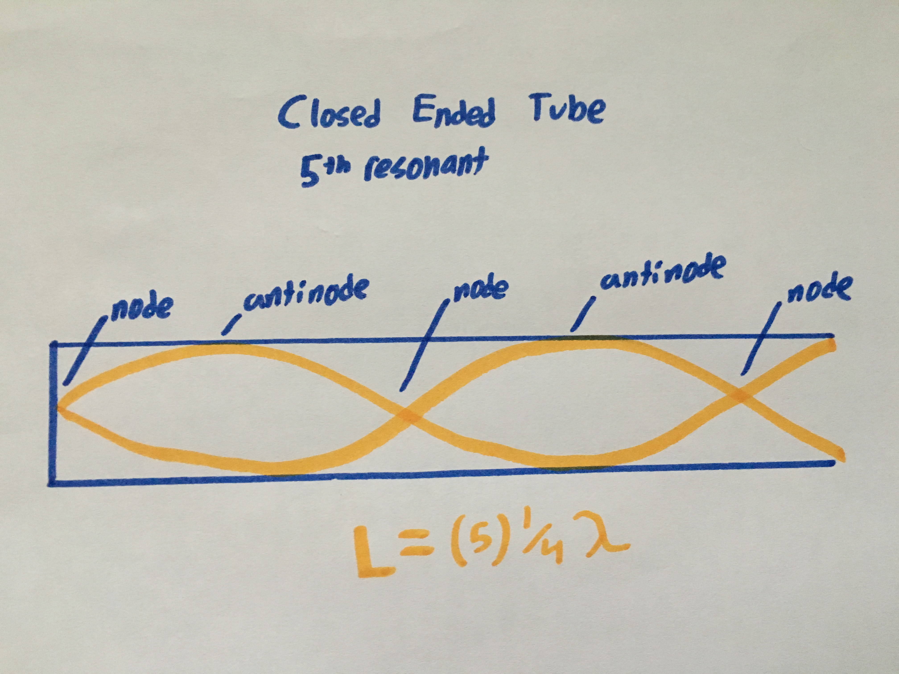

This project was all about creating our own musical instrument. We wanted to create a wind instrument with the ability to play a wide range of notes. We chose PVC as a material because it is cheap, durable, lightweight and able to be cut and drilled easily. It is also made with a metal mouthpiece with a funnel shape on the inside, used to create a buzzing sound. When combined, the drilled PVC and mouthpiece create an easy to play and great sounding wind instrument.
This instrument can be classified as a wind instrument, meaning sound is produced by the vibration of air. The air is supplied by the user blowing into the metal mouthpiece at the end. Since it is a closed ended tube, resonants are only produced at odd number harmonics, because even number harmonics occur at the nodes of the standing wave. Changing the length of the tube by covering and uncovering the holes along the top has an effect on this.
There are two primary methods of changing the pitch of the instrument to match different notes. First, you can change the pitch by covering and uncovering different holes to change the length of the air column, effectively impacting the wavelength and thus increasing or decreasing the pitch, or the percieved frequency. Second, you can change the pitch by shaping your lips in different ways in the mouthpiece. This takes a bit of practice but it is very effective. With both of these methods, this instrument is capable of reaching multiple octaves of notes.